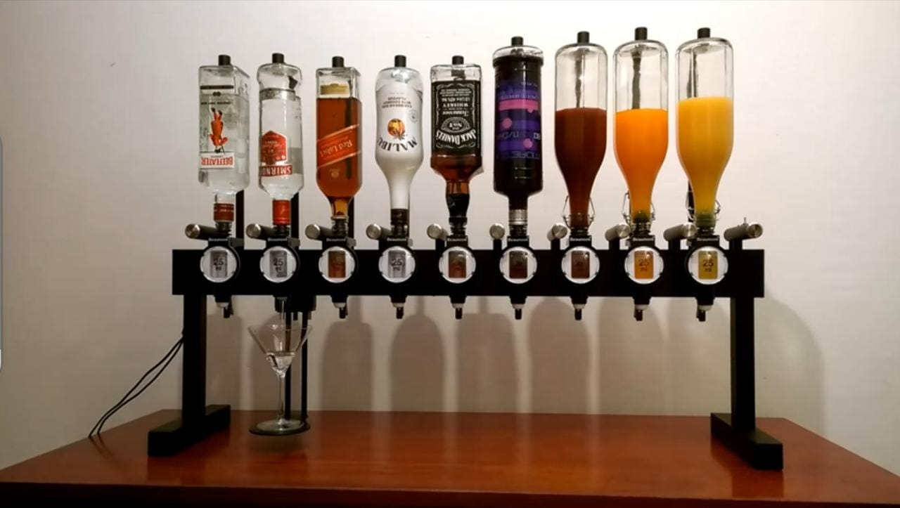
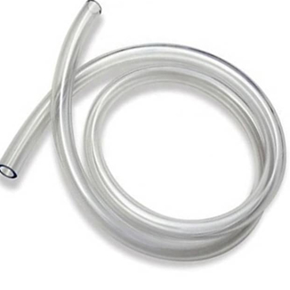
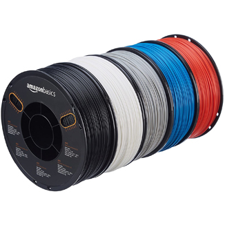
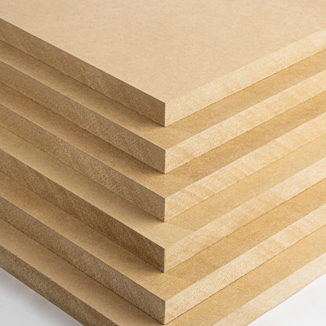
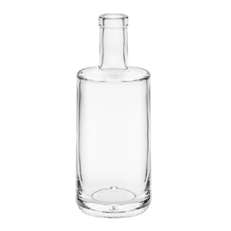

INFORME Y DIAGRAMA
1. Producto: Barman automizado.
2. Problema: La preparación de cócteles puede ser un proceso divertido en una reunión familiar o amical, sin embargo esta puede conllevar un proceso tardado por la medición de cada ingrediente para que esta salga perfecta. Además, muchos sabemos lo tedioso que es estar interrumpiendo una fiesta para la elaboración de un trago, y a veces no se tiene el presupuesto suficiente para contratar a un barman que haga realidad el servicio.
3. Función: Es un barman robotizado que se encarga de mezclar bebidas como un verdadero profesional. Su función principal es la preparación de diferentes cócteles para reuniones, fiestas y ocasiones especiales.
4. Materiales a usar:
- Arduino 1
- Encoder rotatorio
- Bomba de agua x2
- Pantalla LCD 16X2
- Tubos conectores (mangueras) 
- Cables dupont
- Puente H
- Cargador 12v
- Adaptador 12v
- Filamentos(impresión 3D)- para base exterior 
- Madera trupán y variaciones para base exterior (diseño final) 
- Copa de cóctel
- Botellas de bebidas alcohólicas 


5. Componentes:
- Arduino:
- Controlara el sistema automático de bebidas.
- Módulo rotaroio:
- Tendrá dos funciones (indicador de elección de bebida;botón de elección) como su función es rotar opciones, está facilitará para así elegir la opción de bebida según sus preferencias, luego se presionará como si fuese un botón para iniciar la acción de servido de la bebida elegida .
- Panel digital:
- Se visualizará el tiempo de demora hasta llegar al 100% del servicio al igual que la elección de bebida y onzas.
- Bomba de agua:
- Realizará la acción de impulsar el líquido de las bebidas seleccionadas hasta la copa.
- Tubos conectores (mangueras):
- Por donde pasarán las bebidas.
- Cables dupont:
- Realizará conexiones con el arduino y componentes.
- Puente H
- Va a permitir unir y dar el voltaje necesario para el funcionamiento de las bombas.
- Cargador 12v
- Permitirá dar el voltaje necesario para el funcionamiento.
- Adaptador 12v
- Nos permitirá hacer conexiones sin romper o modificar el cargador.
6. Sistema:
-
ENTRADA:
- Pulsación de botón de inicio
-
PROCESADOR:
- Arduino 1 + código
-
ACTUADOR:
- Elección de bebida con el encoder.
- Las opciones de estas aparecerán en el panel digital.
- Cuando la bebida esté seleccionada y conformada, se procederá a presionar el encoder para dar inicio a la acción.
- Estas pasarán por tubos conectores (mangueras) por medio de las bombas de agua que impulsarán el líquido hasta la copa.
7. Diagrama: